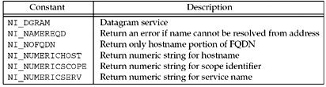

| [ Team LiB ] |
|
11.17 getnameinfo FunctionThis function is the complement of getaddrinfo: It takes a socket address and returns a character string describing the host and another character string describing the service. This function provides this information in a protocol-independent fashion; that is, the caller does not care what type of protocol address is contained in the socket address structure, as that detail is handled by the function.
sockaddr points to the socket address structure containing the protocol address to be converted into a human-readable string, and addrlen is the length of this structure. This structure and its length are normally returned by accept, recvfrom, getsockname, or getpeername. The caller allocates space for the two human-readable strings: host and hostlen specify the host string, and serv and servlen specify the service string. If the caller does not want the host string returned, a hostlen of 0 is specified. Similarly, a servlen of 0 specifies not to return information on the service. The difference between sock_ntop and getnameinfo is that the former does not involve the DNS and just returns a printable version of the IP address and port number. The latter normally tries to obtain a name for both the host and service. Figure 11.20 shows the six flags that can be specified to change the operation of getnameinfo. Figure 11.20. flags for getnameinfo. NI_DGRAM should be specified when the caller knows it is dealing with a datagram socket. The reason is that given only the IP address and port number in the socket address structure, getnameinfo cannot determine the protocol (TCP or UDP). There are a few port numbers that are used for one service with TCP and a completely different service with UDP. An example is port 514, which is the rsh service with TCP, but the syslog service with UDP. NI_NAMEREQD causes an error to be returned if the hostname cannot be resolved using the DNS. This can be used by servers that require the client's IP address to be mapped into a hostname. These servers then take this returned hostname and call getaddrinfo, and then verify that one of the returned addresses is the address in the socket address structure. NI_NOFQDN causes the returned hostname to be truncated at the first period. For example, if the IP address in the socket address structure was 192.168.42.2, gethostbyaddr would return a name of aix.unpbook.com. But if this flag was specified to getnameinfo, it would return the hostname as just aix. NI_NUMERICHOST tells getnameinfo not to call the DNS (which can take time). Instead, the numeric representation of the IP address is returned as a string, probably by calling inet_ntop. Similarly, NI_NUMERICSERV specifies that the decimal port number is to be returned as a string instead of looking up the service name, and NI_NUMERICSCOPE specifies that the numeric form of the scope identifier is to be returned instead of its name. Servers should normally specify NI_NUMERICSERV because the client port numbers typically have no associated service name—they are ephemeral ports. The logical OR of multiple flags can be specified if they make sense together (e.g., NI_DGRAM and NI_NUMERICHOST). |
| [ Team LiB ] |
|